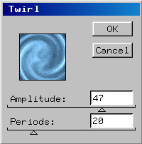
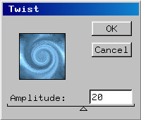
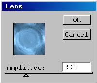
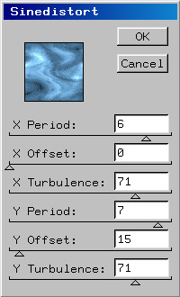
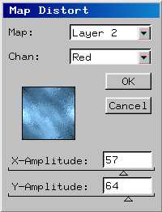

Impact Texture Studio Online Manual
Distortion Menu
File menu
Edit menu
Adjust menu
Generation menu
Distortion menu
Blur menu
Mix menu
Color menu
Misc menu
Twirls a layer

Amplitude: Amount of distortion
Periods: Amount of periods for this
twirl
Twist
Twists a layer. "Whirlpool"-effect.

Amplitude: Amount of distortion
Lens
Distorts the current layer as if
a lens was placed over it

Amplitude: Amount of distortion (lens
strength)
Sinedistort
Distorts the current layer with
a sineplasma

X Period: Periods fitting in the
x-resolution
X Offset: Offset in the x-direction
X Turbulence: Amount of distortion
in the x-direction
Y Period: Periods fitting in the
y-resolution
Y Offset: Offset in the y-direction
Y Turbulence: Amount of distortion
in the y-direction
Mapdistort
Distorts the current layer with
a channel from another layer as a map
Useful with bump-maps

X Amplitude: Amount of distortion
in the x-direction
Y Amplitude: Amount of distortion
in the y-direction